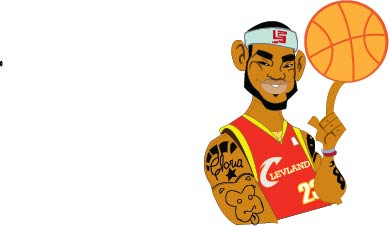
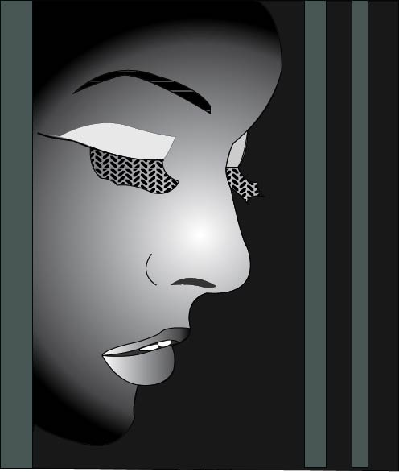

redrawing an international star is always a challenge and i took this one. I recreated the image of "Lebron "
The software used was Adobe illustrator

Everyone has that moment in life when everything seems so hard to bare. But we should not despair because it all comes to an end at some point. Image drawn using adbe illustrator